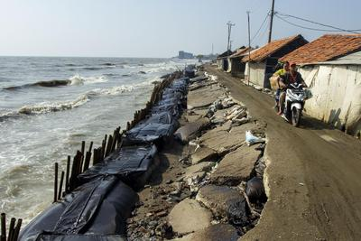

Latar Belakang

Mangrove merupakan suatu komunitas vegetasi pantai wilayah tropis yang didominasi oleh beberapa spesies pohon
yang khas atau semak-semak yang mampu tumbuh diperairan asin (Nyabakken 1993). Menurut Bengen (2004) mangrove
sebagai suatu komunitas vegetasi pantai tropis dan subtropis yang didominasi oleh beberapa jenis pohon yang
mampu tumbuh dan berkembang pada daerah pasang surut pantai berlumpur. Hutan mangrove mempunyai fungsi
ekonomis dan fungsi ekologis. Salah satu fungsi ekologis adalah mencegah terjadinya abrasi pantai dan
sumberdaya yang paling banyak menghasilkan nutrien bagi ekosistem dan beberapa biota dan tempat berasosiasi
berbagai organisme seperti udang, kerang, kepiting, dan lain-lain. Sedangkan fungsi ekonomisnya sebagai
penyediaan kayu, daun-daunan sebagai bahan baku obat-obatan dan getah-getahan. Disamping itu juga hutan
mangrove mempunyai fungsi non-ekonomis yaitu sebagai lahan eksploitasi, tambak udang, pariwisata, dan sebagai
daerah industri.
Seiring berjalannya waktu banyak ditemukan kerusakan hutan mangrove yang disebabkan oleh manusia. Sehingga
mengakibatkan hutan mangrove beralih fungsi diantaranya menjadi areal tambak untuk budidaya perairan,
kegiatan-kegiatan komersial, dan industri, serta adanya eksploitasi secara berlebihan terhadap kayu mangrove
yang membabi buta. Permasalahan ini banyak dihadapi sebagian besar wilayah pesisir pantai di Indonesia.